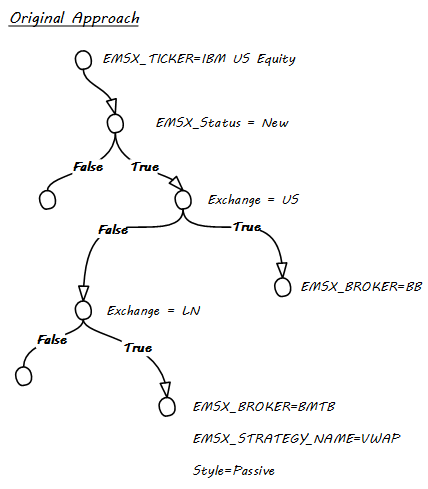
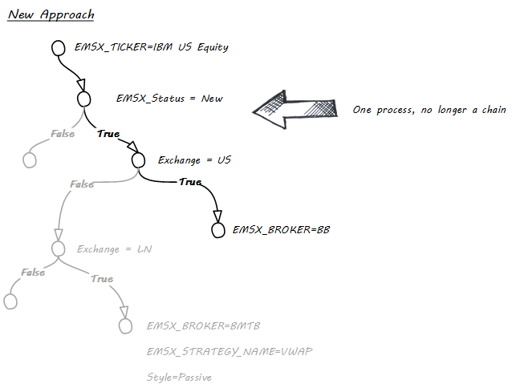

Resource¶
EMSX Route Status¶
| Field | Previous Value | New Value | Definition |
|---|---|---|---|
EMSX_STATUS |
null | SENT |
New route (placement) created. |
EMSX_STATUS |
SENT |
SENT |
Field update on sent. |
EMSX_STATUS |
SENT |
WORKING |
ACK received from the broker. |
EMSX_STATUS |
WORKING |
PARTFILL |
First fill or multiple fills. (<100%) |
EMSX_WORKING |
n | <n and >0 | |
EMSX_STATUS |
PARTFILL |
PARTFILL |
Middle fill or multiple fills. (<100%) |
EMSX_WORKING |
n | <n and >0 | |
EMSX_STATUS |
PARTFILL |
FILLED |
Final fill or multiple fills. (100%) |
EMSX_WORKING |
>0 | 0 | |
EMSX_STATUS |
WORKING |
FILLED |
Full single fill. |
EMSX_WORKING |
>0 | 0 | |
EMSX_STATUS |
null | FILLED |
Historic 100% fill on INIT_PAINT. |
EMSX_STATUS |
null | WORKING |
Working route (placement) on INIT_PAINT. |
EMSX_STATUS |
null | PARTFILL |
Part filled route (placement) on INIT_PAINT. |
EMSX_STATUS |
null | CXLREQ |
Cancel requested on route in INIT_PAINT. |
EMSX_STATUS |
WORKING |
CXLREQ |
Cancel route request sent. |
EMSX_STATUS |
CXLREQ |
WORKING |
Broker rejected cancel request. |
EMSX_STATUS |
CXLREQ |
CXLPEN |
Broker sent ACK for cancel request. |
EMSX_STATUS |
CXLPEN |
WORKING |
Broker rejected cancel request. |
EMSX_STATUS |
CXLREQ |
CANCEL |
Broker cancelled route from request. |
EMSX_STATUS |
CXLPEN |
CANCEL |
Broker cancelled route from request. |
EMSX_STATUS |
PARTFILL |
CXLREQ |
Cancel requested on part filled route. |
EMSX_STATUS |
CXLREQ |
PARTFILL |
Broker rejected cancel request. |
EMSX_STATUS |
CXLPEN |
PARTFILL |
Broker rejected cancel request. |
EMSX_STATUS |
WORKING |
CXLRPRQ |
Modify (cancel/replace) request sent to broker. |
EMSX_STATUS |
CXLRPRQ |
REPPEN |
Broker sent ACK for modify request. |
EMSX_STATUS |
REPPEN |
WORKING |
Broker rejected modify request on working route. |
EMSX_BROKER_STATUS |
n/a | CXLRPRJ |
|
EMSX_STATUS |
REPPEN |
WORKING |
Broker accepted and applied the modify request on working route. (placement) |
EMSX_BROKER_STATUS |
n/a | MODIFIED |
|
EMSX_STATUS |
PARTFILL |
CXLRPRQ |
Modify (cancel/replace) request sent to broker. |
EMSX_STATUS |
REPPEN |
PARTFILL |
Broker rejected modify request on part filled route. (placement) |
EMSX_BROKER_STATUS |
n/a | CXLRPRJ |
|
EMSX_STATUS |
REPPEN |
PARTFILL |
Broker accepted and applied the modify request on part filled route. (placement) |
EMSX_BROKER_STATUS |
n/a | MODIFIED |
|
EMSX_STATUS |
SENT |
REJECTED |
Broker rejected the order from sent status. |
EMSX_STATUS |
null | REJECTED |
INIT_PAINT shows route (placement) rejected. |
EMSX_STATUS |
null | CANCEL |
INIT_PAINT shows route (placement) cancelled. |
EMSX_STATUS |
CXLRPRQ |
WORKING |
Modify rejected from request. |
EMSX_STATUS |
PARTFILL |
CANCEL |
Part filled route cancelled by broker. |
EMSX_STATUS |
WORKING |
CANCEL |
Working route cancelled by broker. |
EMSX_STATUS |
WORKING |
REJECTED |
Route rejected from working. |
RuleMSX¶
The RuleMSX is a business rule management project using Bloomberg EMSX API for trading, Bloomberg Market Data for market data and rete algorithm for efficient business rule management.
RuleMSX provides the core functionality of a rule engine. It is designed to inter-operate with the EasyMSX and EasyMKT which use the Bloomberg API to access Bloomberg EMSX and market data. The RuleMSX is designed to use the rete algorithm to create an efficient business rule management system to work with Bloomberg EMSX API for automated trade execution for equities, futures, and options.
This functionality is provided in the shape of RuleSets, DataSets and Actions. By defining Rules and the conditions that must exist for these Rules to be triggered, the user can build complex reasoning based on the content of a DataSet, and how that DataSet changes over time. The Actions are the tasks performed as a result of a Rule being triggered.
RETE Algorithm¶
The word rete is Latin for net or network. The rete algorithm is essentially a pattern matching algorithm.
The main objective behind rete algorithm for RuleMSX is to decouple the various trading or business rules from rule execution or executing sequences on a particular data set.
The data set here can be both trading data obtained from EMSX API, market data, or non-trading based proprietary data set.
The RuleMSX views each rule exists as a stand-alone rule that is either true or false at any given moment.
A pattern contains one or more rules. All the rules in a pattern must evaluate to true for the action attached to the pattern to be executed. In this case, the action itself is responsible for introducing the new rules to be checked and/or new patterns or patterns to be removed from the set.
Earlier Version¶
The initial approach to RuleMSX handled the rete in the following structure where each RuleSet consists of a single rule. Each rule consisted of child rules and rule evaluator.
As part of the reiteration of RuleMSX, we have made the changes to reflect the rete algorithm in the following structure:
RuleSets¶
RuleSets are named entities that represent a collection of RuleSet objects. This is only used to organize rules into logical groupings. A RuleSet is a named collection of Rules.
An example of a RuleSet would be to route new orders to a particular broker code, based on certain criteria, such as the exchange. We will call this the “AutoRoute” ruleset.
Once we have a RuleSet and a DataSet object, we can execute the RuleSet. RuleSets need one or more supporting DataSets to operate against.
Rules¶
Each Rule in a RuleSet is a named collection of RuleConditions and RuleActions. When all conditions in a Rule evaluate to True, the associated actions are executed.
Following the above example, and single rule within the AutoRoute ruleset would be RouteUStoBB, which would route any orders on the US exchange code to the broker known as BB. The other rule example could be RouteLNtoBMTB.
RuleConditions¶
A RuleCondition is a named item within a Rule, which evaluates to either True or False. It does this through client-side code using a RuleEvaluator. A single Rule can have multiple RuleConditions, and they must all evaluate to True for the associated RuleActions to be executed.
For our RouteUStoBB example, we would have a condition called MustBeUSExchange that checked the order to ensure that it was for the US exchange. Another condition would be that the order must be in a NEW state, perhaps called CheckNEWState, to ensure that this rule is only triggered once.
RuleEvaluator¶
A RuleEvaluator is an abstract class that must be implemented in the client-side code. This abstract class has an Evaluate method that must be overridden. This method must return True or False. When the Evaluate method is called, it is passed the current DataSet as a
parameter, to support the determination of the return value.
The abstract class also provides a mechanism for creating a dependency between a Rule and named DataPoints. To do this, we call the AddDependantDataPointName method of the class, as follows :-
this.AddDependantDataPointName("OrderStatus")
In this case, we are saying that this particular Rule uses the value of the OrderStatus DataPoint. The purpose of using this mechanism is to ensure that if the value of OrderStatus in any DataSet changes, any WorkingRules add queue to be re-tested in the next cycle. The change to the value of a DataPoint is indicated by calling the SetStale method (see DataPointSource).
RuleActions¶
A Rule can have many RuleActions. Each RuleAction has a client-side component called an``ActionExecutor``. When a Rule evaluates to True, all associated RuleActions are executed.
For example, we would have a RuleAction called RouteOrdertoBB. which would be called as a consequence of the RouteUStoBB rules all evaluating to True.
ActionExecutors¶
An ActionExecutor is the client-side code that is run when an Action is executed. It is an abstract class that contains an Execute method that must be overridden.
When the RouteOrdertoBB action is executed, the Execute method of the instance of the abstract class would be called. This is the code that would create and send the route to the broker. Just as with the RuleCondition evaluators, the executors are passed the current dataset as a parameter when they are called.
DataSets¶
DataSets are named entities that represent a collection of DataPoint objects. They are only used to organize DataPoints into logical groupings.
In our current example, we would create a DataSet object for each order. Once the DataSet object is defined, we can add it to the list of DataSets being run through a RuleSet by the ExecutionAgent.
DataPoints¶
A DataPoint is an object that represents a single piece of data. Fundamentally, it is a simple key-value pair. A DataPoint doesn’t have value itself, but rather has an underlying DataPointSource which is used to provide the value.
Examples of DataPoints would be OrderNumber, OrderStatus, OrderExchange, etc.
DataPointSource¶
A DataPointSource is a client-side code that provides a value for a named DataPoint. It is an abstract class with a GetValue method that must be overridden. It also provides a SetStale method that is used to indicate to the ExecutionAgent that the value must be re-examined. This will cause any WorkingRules for Rule that has a dependency on this DataPoint to be the queue for re-evaluation on the next cycle.
The DataPointSources for the above example DataPoints would access the EMSX data to return the correct EMSX_SEQUENCE and EMSX_STATUS, and perhaps use the reference data service to get the exchange code for the ticker on the order.
The ExecutionAgent process¶
When the application has completed the configuration of all the main elements (Rules, RuleConditions, Evaluators, Action,
Executors, and etc.), one or more RuleSets can be executed.
This involves taking a DataSet and asking the RuleSet to be executed against that DataSet: -
myRuleSet.Execute(dataSet_1);
If this is the first time this RuleSet has been executed, a new ExecutionAgent will be created for the RuleSet. If the RuleSet already has an ExecutionAgent, it will be reused. The specified DataSet is then passed to the RuleSet’s ExecutionAgent: -
executionAgent = new ExecutionAgent(myRuleSet, dataSet_1);
or
executionAgent.AddDataSet(dataSet_1);
Each ExecutionAgent has a DataSetQueue. Adding a DataSet to an ExecutionAgent simply adds the DataSet reference into the DataSetQueue. This is used to ensure that new DataSets are only ingested at the correct time, and not at the mid-point of a cycle.
A new ExecutionAgent will create a new internal thread that will operate a WorkingSetAgent. This WorkingSetAgent is the main loop that controls the execution of the rules and actions for a RuleSet, and it continues to run until stopped by an external request (a call to the stop() method).
Each cycle of the WorkingSetAgent begins with ingesting any DataSets in the ExecutionAgent’s DataSetQueue. This is the process of creating a WorkingRule for each Rule in the RuleSet and the specified DataSet.
To create a WorkingRule, a Rule and a DataSet are required. A process known as dereferencing takes place, which has two steps. The first step is to take each Action associated with the Rule and add the ActionExecutor references to the WorkingRule’s Executors collection.
The second part of the dereferencing process is to iterate each RuleCondition of the Rule, and add it’s RuleEvaluator to the Evaluators collection of the WorkingRule. Each RuleEvaluator has a collection of DataPoint names that it depends on. For each of these dependant data point names, we find the actual DataPoint in the DataSet that matches the name. The WorkingRule is then added to the AssociatedWorkingRules collection of the DataPoint’s DataPointSource object.
The reason for doing this is that when a DataPointSource’s value changes, its SetStale() method is (should be) fired. This forces each WorkingRule dependency of the DataPointSource to be added to the OpenSetQueue in the WorkingSetAgent for execution in the next cycle, unless the WorkingRule is already in the OpenSetQueue.
Following the ingestion process, the current OpenSetQueue becomes the OpenSet, and the OpenSetQueue is then reset to empty. The OpenSet is now iterated, and each WorkingRule in the queue is processed. Each Evaluator in the WorkingRule is fired, passing it the WorkingRule’s DataSet. If all Evaluators in the WorkingRule return true, then the action process begins. Each action associated with the WorkingRule is executed.
Full EasyMSX Code Samples¶
The link to the main EasyMSX Code Sample.
Full EMSX API Documentation¶
The link to the main EMSX API Documentation.
Full EMSX API Code Samples¶
The github link to the EMSX API Code Sample.
Full Bloomberg API Developer Guide¶
The link to the Open API Core Developer Guide.
The link to the python RuleMSX.
reference¶
| Bloomberg API SDK in CSharp (e.g. c:blpDAPIAPIv3DotnetAPIv3.8.9.2libBloomberglp.Blpapi.dll) |
| EasyMKT.dll (e.g. c:… cs_EasyMKT-masterEasyMKTbinDebugEasyMKT.dll) |
| EasyMSX.dll (e.g. c:… cs_EasyMSX-masterEasyMSXbinDebugEasyMSX.dll) |
| RuleMSX.dll (e.g. c:… cs_RuleMSX-masterRuleMSXbinDebugRuleMSX.dll) |